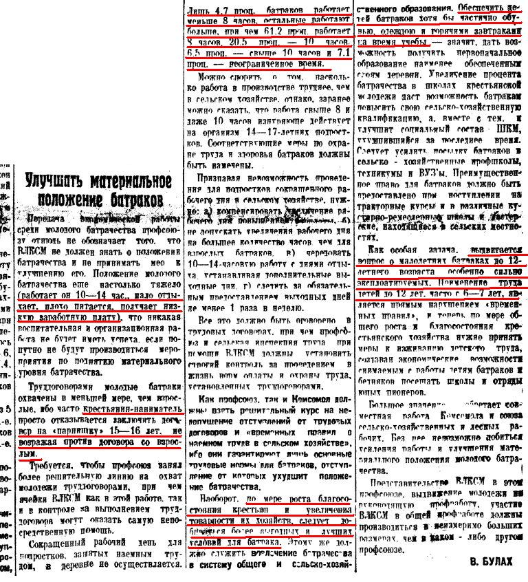

http://poltora-bobra.livejournal.com/108288.html
poltora_bobra
Бедняк — лодырь?
Сегодня усиленно раздувается миф, причем миф старый, что кулак был работником, а бедняк - лодырем. " Ведь кто такой кулак? Это просто энергичный предприниматель. А бедняк? Это же лодырь и лежебока, который всё время хочет жрать! Вот он и устроил бунт."
Миф старый. Очень старый
Что интересно, это можно услышать в речи Троцкого на фракции ЦИК 15.10.27
"Ведь дифференциация в деревне "слаба", ведь мы ее преувеличиваем, ведь ее выдумали Голенда и Каменев, ведь вопрос о кулацкой опасности нами раздувается, ведь бедняк это лодырь, ведь у нас бедняцкий перегиб или уклон. Почему же вы в манифесте преподносите сюрприз: освободить дополнительно 10% бедняков от сельскохозяйственного налога?"
Про бедняка и кулака — лодыря и хозяйственного крестьянина, беседуют Ленин и ходок в фильме "Ленин в 1918 году"
"Зачем вы делите крестьян”? Нет крестьян — бедняков, середняков, кулаков. Есть более или менее старательные хозяева и именно от их старательности и “справности” зависит, богато или бедно они живут. Отсюда вполне логичный вывод: неправильно бороться с кулаком, нужно бедноте учиться у него хозяйничать" — В. Шишков "Книга и революция". — 1929. — № 12
Про сегодня я уж и упоминать не буду. Разным монархистам, либералам, казакам и прочим патриотам, дай на эту тему поговорить.
Итак, часть крестьян-бедняков была батраки. Надо думать, тоже лодыри, т.к. бедняки.
"Батра́к муж., батрачка жен. — наёмный работник в сельском хозяйстве дореволюционной и Советской России , часто сезонный, из обедневших, имевших небольшой земельный надел или совершенно лишённых земли крестьян. "

Хотел бы я спросить защитников кулачества, как вы представляете себе повышение благосостояния, если вы работаете 10-14 часов в сутки, но у вас заработка не хватает, чтобы накормить и одеть детей - именно этот вопрос поднимается государством. Как вы отнесетесь, чтобы отдавать своих детей на работу с 6-7 лет?
Почему бедняки с таким удовольствием раскулачивали некоторых односельчан? Они работали на них с раннего детства от зари до зари, за гроши, на которые существовать было невозможно самому, тем более содержать семью. Это с них "деревенские предприниматели" выпивали все соки и, выпив, выбрасывали на улицу побираться "Христа ради" Да, кулаки были трудолюбивы. Трудолюбивы в выжимке из работника всех сил за копеечную плату. Раскулачивание стало платой за сотни лет батрачества.
Выводы, как всегда, делаем сами
25/06/2010
Также см. О крепких хозяевах и коллективизации — В.С. Филимонов